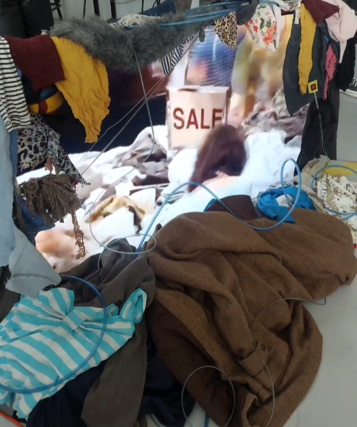
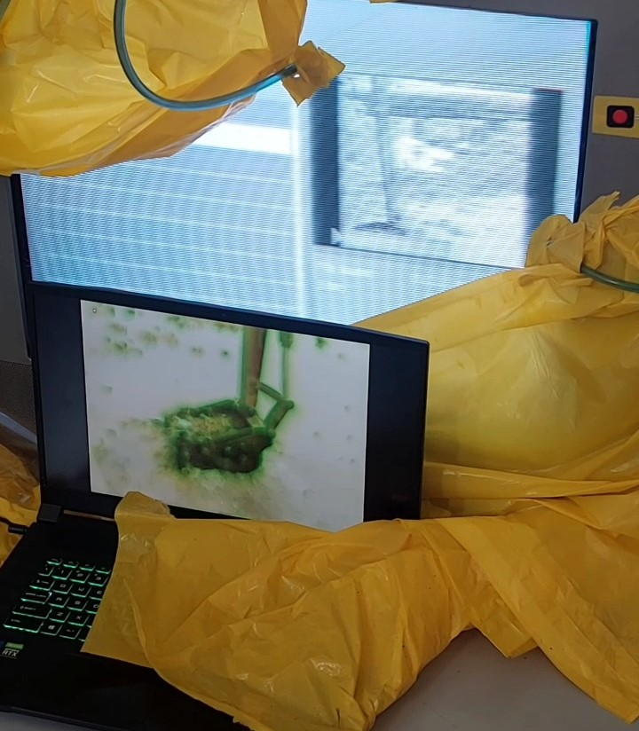
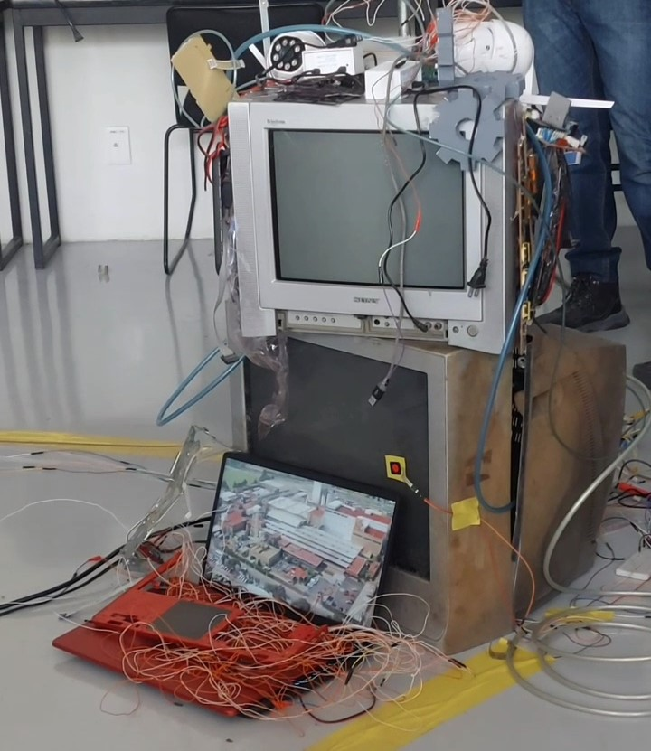
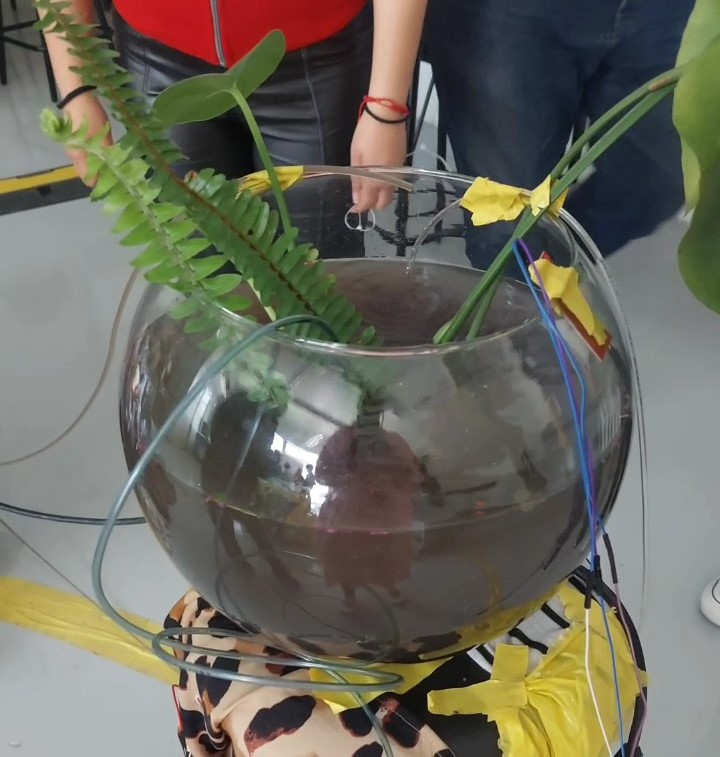
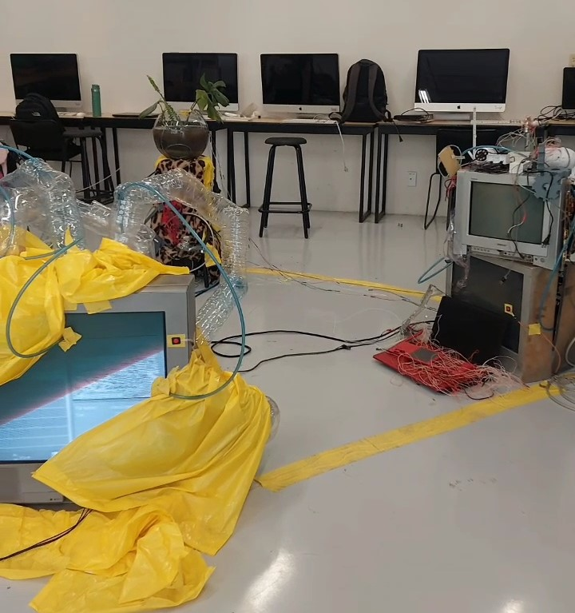
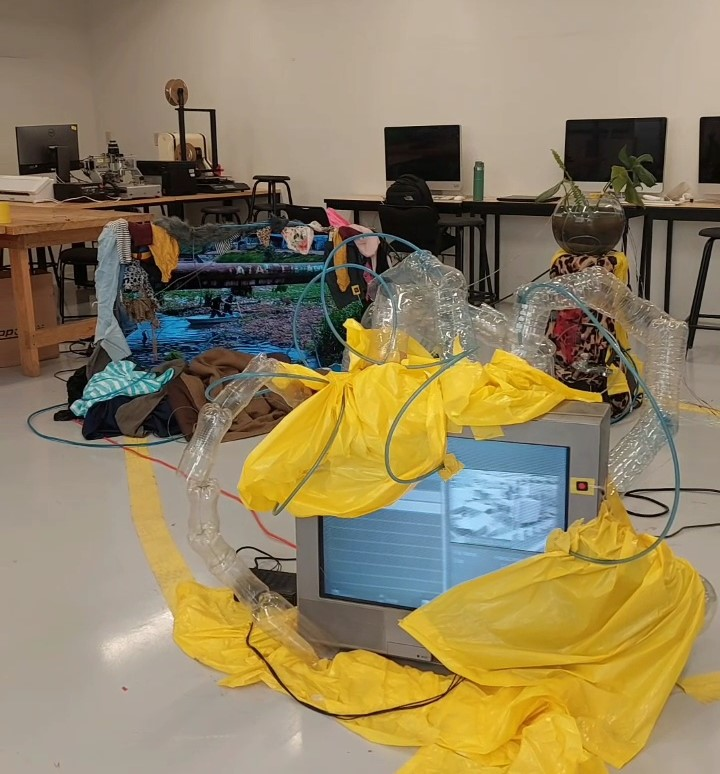

Este proyecto artístico se presenta como una instalación interactiva que explora y visibiliza la tensión entre el desarrollo industrial y la preservación de los ecosistemas naturales, centrado en el caso específico del río Lerma y sus alrededores en la zona industrial de Lerma de Villada. A través de un acuaterrario central, complementado con elementos audiovisuales y esculturales, esta obra simboliza las industrias y un sistema que bombea agua contaminada, ilustrando el deterioro continuo del río durante los últimos 50 años.
El uso creativo del espacio no solo sirve como medio de expresión artística, sino que también facilita una interacción directa de los espectadores con el entorno creado. Esta interactividad permite una comprensión más sencilla y profunda del impacto ambiental negativo, como el ecocidio de la flora, provocado por el vertido de aguas residuales y la actividad industrial. Con esta instalación, buscamos no solo informar sobre el daño ambiental, sino también provocar una reflexión crítica sobre nuestro papel en la conservación y el deterioro de nuestros ecosistemas vitales.
Pieza






plastico
Las empresas de la industria del plástico que han sido identificadas como contaminantes del río Lerma incluyen varias que han sido clausuradas por la Procuraduría Federal de Protección al Ambiente (PROFEPA). Entre estas empresas se encuentran aquellas localizadas en los estados de México, Michoacán y Querétaro, donde se ha llevado a cabo la mayoría de las clausuras debido a la contaminación industrial (https://www.gob.mx/profepa/prensa/clausura-profepa-31-empresas-por-contaminacion-en-el-rio-lerma)
La información específica sobre los nombres de las empresas de la industria del plástico no siempre se divulga públicamente, pero se sabe que la industria plástica es una de las muchas que contribuyen a la contaminación del río. Esta contaminación incluye residuos peligrosos y descargas de aguas residuales no tratadas adecuadamente.
En resumen, aunque las autoridades han tomado medidas contra varias empresas industriales en la cuenca del río Lerma, las empresas específicas del sector plástico no siempre se identifican explícitamente en los informes públicos. Para más detalles, es recomendable revisar los comunicados oficiales de PROFEPA y otros informes ambientales regionales.
textil
En la industria textil, algunas empresas han sido señaladas por contaminar el río Lerma y otras corrientes de agua en México. Dos ejemplos prominentes son Kaltex y Lavamex.
Kaltex, ubicada en San Juan del Río, Querétaro, y Lavamex, en Aguascalientes, han sido mencionadas en informes de Greenpeace por descargar sustancias peligrosas en los ríos cercanos a sus instalaciones. Estos procesos incluyen el teñido y lavado de mezclilla, un producto clave en la industria textil mexicana. Entre los contaminantes identificados en los efluentes de estas plantas se encuentran el nonilfenol, que puede causar trastornos hormonales, así como otros compuestos tóxicos para la vida acuática como benzotriazoles y fosfato de tributilo
Estas empresas y otras del sector textil en México enfrentan desafíos significativos relacionados con la gestión de residuos y el cumplimiento de normativas ambientales. La alta toxicidad del agua en ciertas áreas es una preocupación constante, y se han realizado esfuerzos para monitorear y mejorar la calidad del agua en la región del río Lerma .
Automotriz
Entre las empresas de la industria automotriz que han sido señaladas por contaminar el río Lerma se encuentra Honda, específicamente en el contexto del río Santiago, que es parte de la cuenca Lerma-Santiago. Honda fue identificada junto con otras empresas en un informe del gobierno de Jalisco por descargar aguas residuales que no cumplen con los estándares normativos .
Además, en el parque industrial de Lerma, hay varias empresas automotrices y relacionadas con la producción de autopartes que podrían estar contribuyendo a la contaminación si no manejan adecuadamente sus residuos industriales. Entre estas empresas se encuentran Johnson Controls Automotriz México y Nissan Mexicana, que se dedican al ensamblaje y distribución de partes automotrices respectivamente .
La contaminación del río Lerma es un problema complejo que involucra a múltiples sectores industriales, incluyendo la automotriz, y requiere de la cooperación entre empresas y autoridades para implementar prácticas más sostenibles y reducir la descarga de contaminantes en el río.